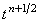
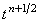

|
2.5. Метод решения с использованием схемы переменных направлений.
Преобразуем с помощью метода дробных шагов неявную разностную схему (8.8)
в схему переменных направлений:
Первая подсхема в схеме переменных направлений (8.14) аппроксимируется на первом полушаге интервала  t
и является неявной по координате x и явной по координате y. Вторая подсхема аппроксимируется на
втором полушаге интервала t и является неявной по координате y и явной по координате x. Складывая
обе подсхемы, получаем:
Видно, что данное соотношение аппроксимируется относительно точки .
Следовательно, разностный оператор, аппроксимирующий производную функции u по времени, является
центральной конечной разностью, которая, как известно, имеет второй порядок аппроксимации. Таким образом,
схема переменных направлений (8.14), имея порядок аппроксимации
является более точной по сравнению со схемой расщепления (8.12). t
и является неявной по координате x и явной по координате y. Вторая подсхема аппроксимируется на
втором полушаге интервала t и является неявной по координате y и явной по координате x. Складывая
обе подсхемы, получаем:
Видно, что данное соотношение аппроксимируется относительно точки .
Следовательно, разностный оператор, аппроксимирующий производную функции u по времени, является
центральной конечной разностью, которая, как известно, имеет второй порядок аппроксимации. Таким образом,
схема переменных направлений (8.14), имея порядок аппроксимации
является более точной по сравнению со схемой расщепления (8.12).
Каждая из подсхем схемы переменных направлений (8.14) является абсолютно
устойчивой и решается с помощью соответствующего рекуррентного соотношения:
Алгоритм решения схемы переменных направлений (8.14) аналогичен алгоритму решения схемы расщепления (8.12).
|